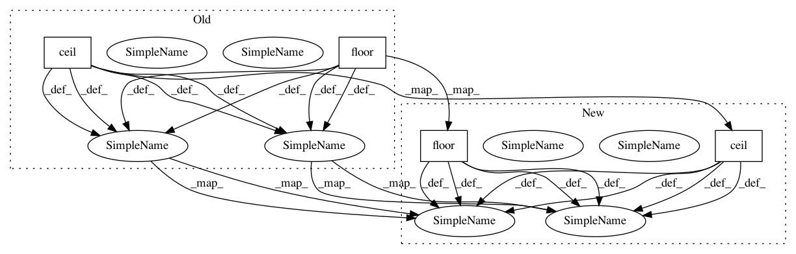

f32d6b238b46bb5125a707db6da8a3c157041ba2,fastmri/models/varnet.py,NormUnet,pad,#NormUnet#,95
Before Change
w_mult = ((w - 1) | 15) + 1
h_mult = ((h - 1) | 15) + 1
w_pad = [math.floor((w_mult - w) / 2), math.ceil((w_mult - w) / 2)]
h_pad = [math.floor((h_mult - h) / 2), math.ceil((h_mult - h) / 2)]
x = F.pad(x, w_pad + h_pad)
return x, (h_pad, w_pad, h_mult, w_mult)
After Change
w_mult = ((w - 1) | 15) + 1
h_mult = ((h - 1) | 15) + 1
w_pad = (math.floor((w_mult - w) / 2), math.ceil((w_mult - w) / 2))
h_pad = (math.floor((h_mult - h) / 2), math.ceil((h_mult - h) / 2))
x = F.pad(x, w_pad + h_pad)
return x, (h_pad, w_pad, h_mult, w_mult)
In pattern: SUPERPATTERN
Frequency: 5
Non-data size: 4
Instances
Project Name: facebookresearch/fastMRI
Commit Name: f32d6b238b46bb5125a707db6da8a3c157041ba2
Time: 2020-10-28
Author: matt.muckley@gmail.com
File Name: fastmri/models/varnet.py
Class Name: NormUnet
Method Name: pad
Project Name: facebookresearch/fastMRI
Commit Name: 63cd5dc1e5e3d921c3e81a629d9fc1bc4da21838
Time: 2020-10-28
Author: matt.muckley@gmail.com
File Name: fastmri/models/varnet.py
Class Name: NormUnet
Method Name: pad
Project Name: grrrr/nsgt
Commit Name: 02d5a085316ce3cf2ef767ace6d20d3678f196f9
Time: 2011-03-30
Author: gr@grrrr.org
File Name: src/nsigtf.py
Class Name:
Method Name: nsigtf